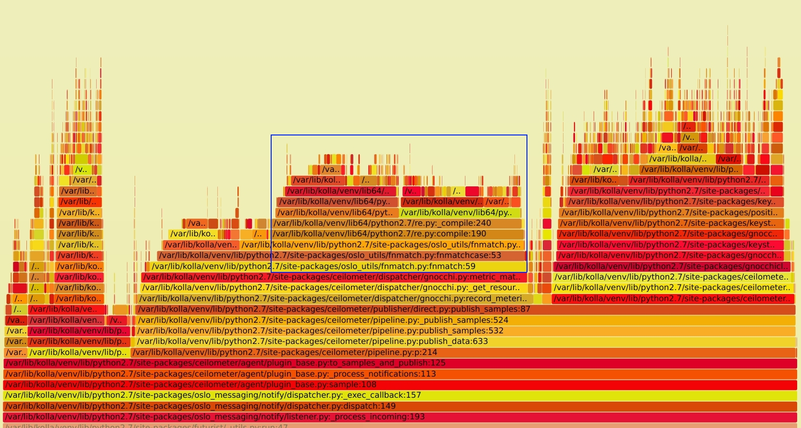
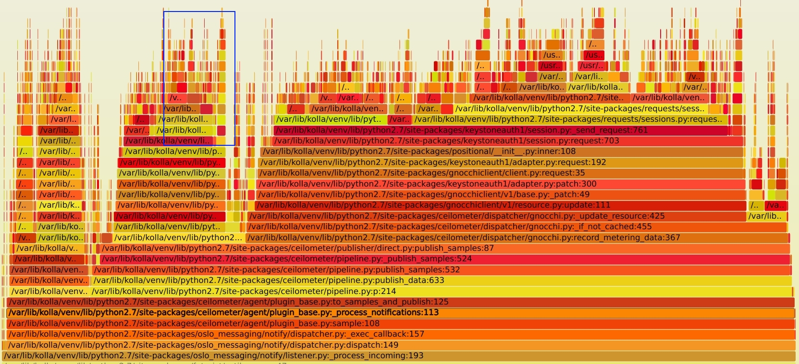

在上一篇文章中， 「记一次 ceilometer 性能分析」中，我们分析了 ceilometer 的架构，及由于keystonauth 的问题，导致的大量 get_endpoints 的请求。文章的最后，成功的把这去掉了这部分无意义的请求。但是即使优化后，ceilometer notification 服务还是会吃掉大量CPU, 那 ceilometer 还有没有其它的优化空间呢?
细心的伙伴也许会发现，在最后的火焰图下，还有大量的 re.py 模块的调用。大约占掉了总 CPU 的使用的 28%(下图蓝框部分)。这是值得怀疑的。正则处理不应该这么慢。SVG文件见 notification_perf_after.svg

分析¶
结合代码查下，定位到了如下部分
def metric_match(self, metric_name):
for t in self.cfg['metrics']:
if fnmatch.fnmatch(metric_name, t):
return True
return False
对于每个 metric 都会调用一次 fnmatch 命令，所以有大量的请求。那为什么会那么慢呢? 再继续跟踪到 oslo_util 的 fnmatch 实现，看到如下代码
import fnmatch as standard_fnmatch
if sys.version_info > (2, 7, 9):
fnmatch = standard_fnmatch.fnmatch
fnmatchcase = standard_fnmatch.fnmatchcase
filter = standard_fnmatch.filter
translate = standard_fnmatch.translate
else:
_MATCH_CACHE = {}
_MATCH_CACHE_MAX = 100
def _get_cached_pattern(pattern):
cached_pattern = _MATCH_CACHE.get(pattern)
if cached_pattern is None:
translated_pattern = translate(pattern)
cached_pattern = re.compile(translated_pattern)
if len(_MATCH_CACHE) >= _MATCH_CACHE_MAX:
_MATCH_CACHE.clear()
_MATCH_CACHE[pattern] = cached_pattern
return cached_pattern
def fnmatch(filename, pattern):
filename = os.path.normcase(filename)
pattern = os.path.normcase(pattern)
return fnmatchcase(filename, pattern)
我的环境里面使用的是 CentOS 自带的 Python 2.7.5, 所以用的 oslo_util 里面的实现。 如果使用的是 python > 2.7.9 的版本，还是会使用系统的。原因主要是 2.7.9 以下的版本里面实现里面有问题，线程不安全。这点在当时的 commit message 找到1
fnmatch is not thread safe for versions <= 2.7.9. We have used it in some projects without any lock for concurrency scenario. This patch re-implements a thread safe fnmatch which is very similar to standard nmatch.
除此外，主要的逻辑实现是一样的2。
看上面的代码逻辑，会发现，fnmatch 的实现是依赖了 re 模块，同时为了提升 re.compile 的性能，增加了一个全局的 100 大小的 _MATCH_CACHE 字典。然而会有这么一段逻辑, 当这个字典满了后，就直接清掉了。。。清掉了。。这样做很没有道理，哪怕你随机删掉一个，我觉得都比都清掉好。
if len(_MATCH_CACHE) >= _MATCH_CACHE_MAX:
_MATCH_CACHE.clear()
全清掉后，所有的正则编译都需要重新跑一次。而 ceilometer 处理的 metric 又多，所以会频繁的触发这个问题。也就造成了re.compile 调用，进而吃掉了大量 CPU
验证¶
既然定位了问题，就可以写段代码验证下。 代码逻辑如下：使用不同的 size 值来触发_MATCH_CACHE.clear() 的调用，测试调用时间。
import fnmatch
def test(size):
for j in range(10):
for i in range(size):
fnmatch.fnmatch('test', str(i))
python2 测试¶
[root@node1 ~]# python -m timeit -v -n 100 -r 3 -s 'from fnmatch_test import test' -- 'test(100)'
raw times: 0.124 0.117 0.116
100 loops, best of 3: 1.16 msec per loop
[root@node1 ~]# python -m timeit -v -n 100 -r 3 -s 'from fnmatch_test import test' -- 'test(101)'
raw times: 3.19 3.14 3.24
100 loops, best of 3: 31.4 msec per loop
可以看出， 当 size 为 101 比 100 只多一个对比数据，但是最后的运行时间从 0.116 秒上升到了 3.24 秒。 单次循环的时间花费从 1.16 msec 上升到了 31.4 msec，增加了27倍之多。
python3 测试¶
同时测试了下 python3 的 fnmatch 实现。python3 里面使用了不同的实现。 废弃了 DICT 的 cache 机制，使用 functools.lru_cache, 同时也不是满了全清，而是使用 lru (Least recently used) 的机制。cache size 也从100 提升到了 256, 性能有很大提升34。
# python -m timeit -v -n 100 -r 3 -s 'from fnmatch_test import test' -- 'test(256)'
raw times: 321 msec, 314 msec, 312 msec
100 loops, best of 3: 3.12 msec per loop
# python -m timeit -v -n 100 -r 3 -s 'from fnmatch_test import test' -- 'test(257)'
raw times: 944 msec, 949 msec, 985 msec
100 loops, best of 3: 9.44 msec per loop
可以看出，在超出 cache size, 因为 python3 中不是全清，运行时间只增加了3倍，相比 python2 的情况要好很多了。
问题解决¶
因为我使用的是 OpenStack pike 版本，先搜索了下最新的代码有没有解决这个问题，发现还真解决了。社区 patch 见5。解决的逻辑是因为 resource 里面的 metrics 个数并不多，没有必要使用 fnmatch，而是本地缓存一个 (metric, resource) 的字典，直接反查。不过这个只包含在了 Rocky 及之后的版本里面。我做了一个 backport， 代码见6。
打上 patch 后，再看新的火焰图如下, SVG文件见 notification_perf_ii_after.svg

同时 CPU 的消耗也降低了不少,从100% 降到了 10%-20% 的区间，效果还是很明显的。
总结¶
对比下最早的火焰图，SVG文件见 notification_perf_before.svg。 蓝色框内的请求都已经去掉了，优化掉了近 50%以上的 CPU 消耗。

- 数据还是要仔细分析，还是会有惊喜的
- fnmatch 适合用在数据量少的场景，数据量多最好自己处理
re.compile或用其它思路 - ceilometer+gnocchi的方案还是使用人有点少，要不这问题不应该遗留这么久。
原始链接:http://xcodest.me/ceilometer-performance-analysis-ii.html
许可协议:"署名-非商用-相同方式共享 3.0" 转载请保留原文链接及作者。
Comments